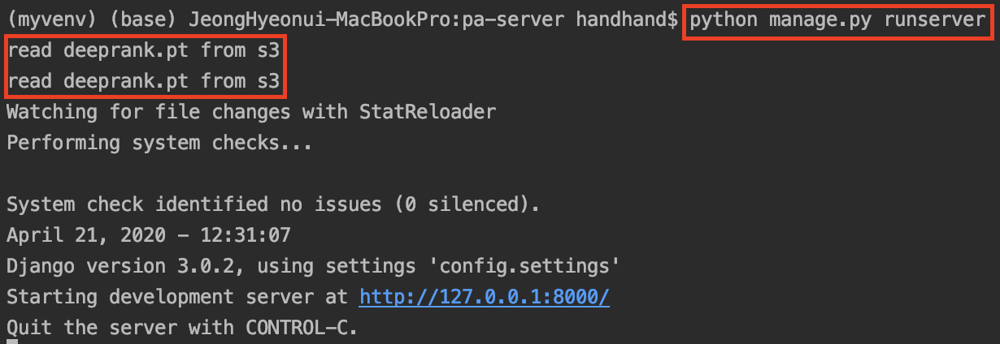
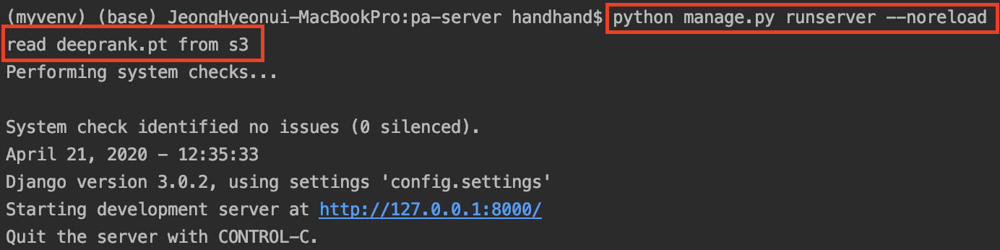

Django와 AWS S3를 활용하여 데이터 관리하기
왜 AWS S3를 사용할까?
이번에 딥랭킹 알고리즘을 활용한 장고 프로젝트를 진행하던 중,
딥러닝 모델 배포과정에서 인스턴스에서 제공하는 용량 초과로 인해 어려움이 있었습니다.
로컬 환경에서 모델 파라미터를 읽어오는 대신 AWS S3를 활용하여
파일 원본은 클라우드 환경에 구성해놓고 이를 로드해서 사용하는 방식으로 변경했습니다.
필요한 과정은 다음과 같습니다.
- AWS S3 활용을 위한 설정
- Django에서 AWS S3 스토리지 불러오기
boto3 패키지 활용
Django에서 AWS S3와의 통신을 위해 먼저 python용 AWS SDK인 boto3를 설치해야합니다.
pip install boto3
Django에서 AWS S3 스토리지 불러오기
Django에서 AWS S3에 접근해 파일을 불러오는 다양한 방법이 있지만
서버 부하를 줄이기 위해 서버 시작시 필요한 파일을 한번만 불러오도록 하겠습니다.
이를 위해선 본인의 django 앱 설정을 변경해야 하므로 apps.py에서 필요한 설정들을 정의합니다.
apps.py
class ApiConfig(AppConfig):
name = 'api'
model = DeepRank()
def ready(self):
# create s3 client
s3client = boto3.client('s3',
aws_access_key_id=settings.S3_ACCESS_KEY,
aws_secret_access_key=settings.S3_SECRET_KEY)
# get object from s3 /w hints
response = s3client.get_object(Bucket='your-s3-bucket-name', Key='model/deep.pt')
# read data from s3
body = response['Body'].read()
stream = BytesIO(body)
ApiConfig.model.load_state_dict(torch.load(stream)) # load model
print('read deep.pt from s3')
Django에서 제공하는 AppConfig 클래스의 ready() 메소드를 오버라이딩해 서버 실행시 필요한 초기화 작업들을 정의해줍니다.
여기서 우리는 AWS S3를 통해 딥러닝 모델 파라미터값(deep.pt)을 불러오도록 하면 되는 것입니다.
이전에 설치한 boto3를 활용해 AWS S3와 통신할 client를 생성하고 원하는 파일을 불러옵니다.
현재 AWS S3를 통해 읽은 데이터는 Byte 값입니다.
따라서 다른 형태의 IO가 필요할 경우 response[‘Body’]의 값을 원하는 타입으로 변환하여 활용합니다.
서버 실행

왜 2번 호출되는 걸까..?
여기서 우리가 주의할 점은 django가 기본적으로 서버 시작시 ApiConfig 를 2번 수행한다는 것입니다.
개발 과정에서 이 부분이 번거롭다고 느껴진다면 python의 auto-reloader 설정을 disable하는 아래와 같은 옵션도 고려해볼 수 있습니다.
python manage.py runserver --noreload

이미 메모리에 존재하는 모듈은 다시 불러오지 않는다.
유용하지만, noreload 옵션은 python 스크립트의 어떠한 변화가 일어나도 해당 모듈이 이미 메모리에 존재하면 다시 로드하지 않으므로 주의가 필요합니다.
참고 자료
- https://towardsdatascience.com/how-to-load-data-from-a-pickle-file-in-s3-using-python-ffe2866b7eba
- https://docs.djangoproject.com/en/3.0/ref/django-admin/
- http://blog.quantylab.com/django_onstartup.html
- https://stackoverflow.com/questions/36420833/django-is-there-a-way-to-keep-the-dev-server-from-restarting-when-a-local-py-f/36420989